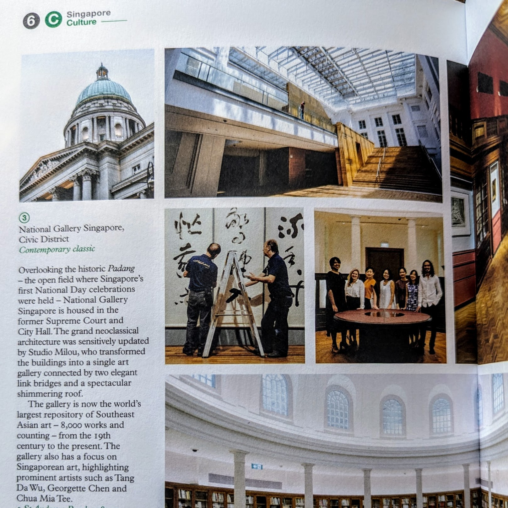
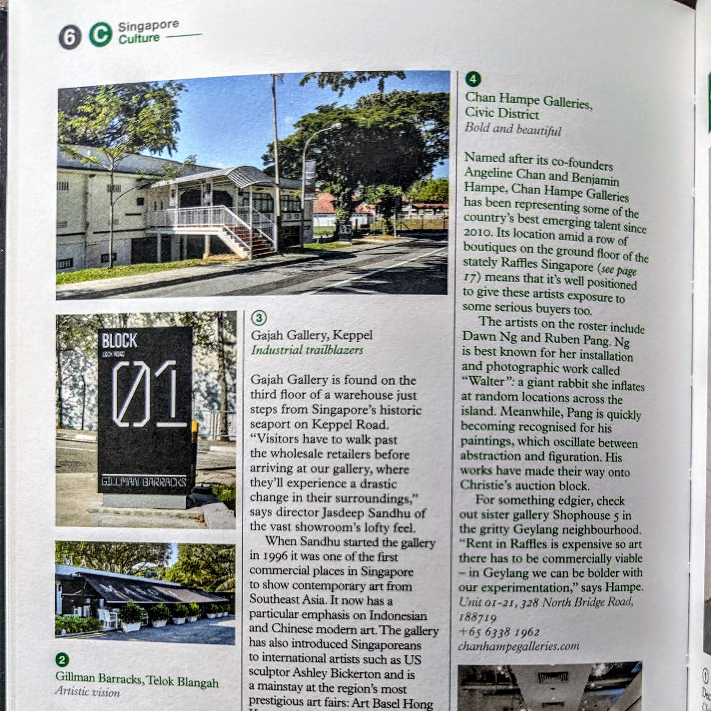

Hong Kong · Jan 2026
The Pier First Class Lounge
“I can’t think of any First Class lounge that will surpass the experience at HKIA, except perhaps those in Dubai or Doha.”
Read the full reviewHonest, specific reviews of the places travellers actually spend their hours in, from Changi to Heathrow, from Ho Chi Minh to Jaipur.
Food, showers, tarmac views and whether the gate is a long walk away.
“I can’t think of any First Class lounge that will surpass the experience at HKIA, except perhaps those in Dubai or Doha.”
Read the full review“I love all EK lounges for their hygiene and service. Toilets and showers are pristine; I can’t say the same for QF international lounges.”
Read the full review“Despite the great food options, we all know what you are here for: the gin.”
Read the full reviewSeats, service and value, including what falls short.
“For a direct flight to NYC, I would fly this in a heartbeat again.”
Read the full review“Nothing exceptional but just a very mid product that is only value for money on a long haul where rest is valued.”
Read the full review“I like that it wraps you in a cocoon with no moving parts to fiddle with.”
Read the full reviewRooms, service and whether a hotel is more than its looks.
“Having a butler in the Fairmont Jaipur proved to be the most memorable aspect of our stay.”
Read the full review“The hotel had put all its efforts into looking great but forgot that a hotel is more than just its looks.”
Read the full review“A design-forward hotel through and through, from the exterior to the lobby to the rooms; no detail is spared.”
Read the full reviewLonger pieces on the cities and cultures for hyper-local experiences
Ari, Charoen Krung, and Thonglor each have something the others don't have — here’s how to spend your time flitting between Bangkok's khwaengs
A weekend in Bangkok hits differently when you stop treating it like a city break and start treating it like a local neighbourhood crawl. The temples and the sky bars will always be there. What changes faster — and rewards the repeat visitor — is the soi-level scene: where the coffee is actually good, where the dinner reservation is worth making, where the energy at 10pm on a Friday feels earned rather than manufactured. Three neighbourhoods are currently doing that work better than anywhere else in the city.
Hop off the BTS at Ari and you’re in a part of Bangkok that hasn’t fully decided what it wants to be — which is precisely why it’s interesting. The sois here run quiet and green, lined with independent cafés, Japanese lunch counters, and the odd concept shop selling things you didn’t know you needed. The crowd is young, Thai-professional, and local in a way that Thonglor, for all its polish, hasn’t been for years.
The Japanese influence runs deep and genuinely: not the sanitised mall-food-court version, but proper udon counters and standing ramen spots seeded by a community that settled in Ari decades ago. Gumps Ari Community Space bundles several small food and retail concepts under one roof — good for a lazy afternoon loop. Yellow Lane, tucked off the main drag in a garden setting, is the kind of café that Singaporeans make special trips for when they’re in town; the pastry programme alone justifies the detour. For dinner, the neighbourhood rewards wandering more than planning. Follow the smell of charcoal down any soi after 6pm and you’ll land somewhere worth eating.
Charoen Krung has been having its moment for long enough now that calling it a discovery would be embarrassing — but it still delivers in a way that few neighbourhoods in the region match. The stretch between Warehouse 30 and the Chao Phraya waterfront packs more genuine character per block than anywhere else in the city: century-old Chinese shophouses, street murals by artists including Bangkok’s own Alex Face, serious restaurants, and the kind of repurposed industrial spaces that Canggu spent years trying to approximate and never quite pulled off.
TCDC — the Thailand Creative & Design Center, set inside a beautifully restored 1940s post office building — is worth an hour of anyone’s time even if you have no professional interest in design. Warehouse 30 itself is best on a weekend morning before it gets crowded, when the organic market is running and the French bakery still has stock. For dinner, the Michelin-tracked Thai restaurants along the river end of the road — Samlor and Charmgang among them — are as good as Bangkok gets at that price point. End the night at one of the riverside bars with a view of Wat Arun across the water. It earns the cliché.
Thonglor has been the reference point for how Bangkok does upscale neighbourhood life for long enough that it’s almost unfashionable to say so — and yet it keeps justifying the reputation. The soi has everything a well-travelled SEA city-dweller actually wants from a night out: omakase restaurants serious enough to make a Tokyo expat feel at home, Thai fine-dining that doesn’t feel performative, natural wine bars, and a club scene that draws international names without the chaos of lower Sukhumvit.
The Japanese expat community here is just as established, and its imprint on the food scene is the real thing — not fusion, but the kind of quietly excellent Japanese cooking that only exists where the customer base demands it. The EmSphere–EmQuartier–Emporium mall trifecta provides the retail backbone; the newer addition of Em Wonder on EmSphere’s fifth floor has added a rooftop bar and club tier that Thonglor residents mostly approve of, if Bangkok group chats are anything to go by. For a KL or Jakarta visitor who wants a single neighbourhood that delivers a full day and night without a taxi in between, Thonglor is still the answer.
All three are on the BTS, which means a well-planned Saturday can take in coffee runs in Ari, a riverside afternoon in Charoen Krung, and dinner in Thonglor without once opening a ride-share app. Bangkok rarely makes things that easy — take it.
Selected contributions for Monocle.
“the largest repository of modern Southeast Asian and Singaporean art in the region”

“has a particular emphasis on Indonesian and Chinese modern art”
